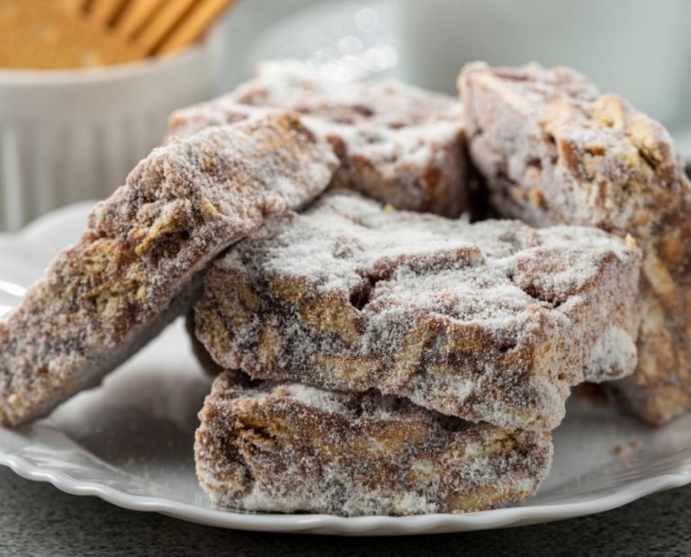
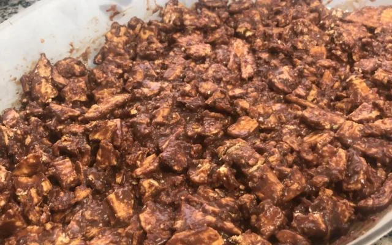

Palha italiana

Ingredientes(8 porções)
- 1 lata de leite condensado
- 1 barra de chocolate meio amargo
- 2 pacotes de biscoito doce

Modo de preparo
- Derreta o chocolate junto com o leite condesado em fogo alto.
- Quebre em pequenos pedaços a bolacha e despeje em uma tigela
- Misture o brigadeiro com a bolacha até deixar uniforme
- Deixe no congelador por 30 minutos e está pronto!
Link para melhor entendimento da receita:
Link imagem 1: